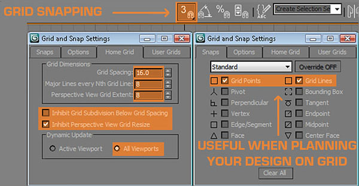

Modular Environment Creation
Overview
This section details how to make environment assets modular so they work as easily as Lego bricks and support quick and efficient level creation. I'll be using the COG_Hospital set from Gears2 as an example of how we build up a set of assets that work well together and demonstrating how it is the attention paid to the grid when planning that plays a critical role in ensuring their usability ingame.
Theory
An environment artists goal is to make a seamless robust set of Lego that allows the level designers to quickly shell out a level and the more we work on the grid, the more solid and reliable our designs become.
You can see from the shot above that all the bricks are on the grid and are the same size across each separate asset. This is what ensures usability in your work because the grid is rigid and keeps us focused on building things that are logical and mathematical underneath the hood.
Repetition is often the cornerstone of a good environment set , we want the environment to be almost invisible until you are meant to pay attention to it through the dictates of the gameplay or a storyline progression. It's important to understand that not every piece is a hero piece, most modular pieces are quite plain on their own and only seem impressive when combined with other assets.
It's likewise important to have a solid workflow that helps you stick to the rules and ensures you are efficient in how you approach a 'set' of environment assets. I tend to start with the plain modular pieces first and build the foundation of a level through them, the advantage of working this way is that it provides you with reusable pieces for each new asset you build as you flesh out the set.
Building the plain brick wall first provided me with a set of reusable bricks and a baseline scale guide for the large archway piece. The large archway piece required I build some clamp pieces and a couple of decorative base relief egg and wing bits which I then used on the decorative brick pillar.
The Grid is God
Before you begin making assets its important to make sure your max scene is set up to mirror the Level Designers settings in UE3 so set things up as shown below.

I always throw a character scale guide into the scene to help me build things that look more realistic, I also make sure I have scale guides for cover (96 units high), steps, walls, doorway dimensions ( large enough for 2 to go through ). If you collect the standardized scale guides into a scene with the correct grid settings you can then save this in Max's scenes director as Maxstart.max and then each time you start the application it will load up and keep you on the path.
If you do this once and save it out, you never need to do it again and you ensure that everything will be built to the correct scale in UE3. If everyone uses the same base settings on the environment team it also ensures there will be not scale issues between different artists work and this makes for less work at the end of a project when we all end up touching others work when optimizing things.
Building the brick wall
Making bricks on the grid is pretty straight forward, prepping them for Zbrush is just as easy and we really only need to build a handful of unique bricks because we can rotate or flip each instanced brick horizontally or vertically before we place it beside the others. You can see below the steps I took to get an evenly subdivided brick.
Once you are satisfied with the subdivision, duplicate it 6 or 8 times, attach them all together and export as an OBJ file so you can import them in Zbrush and detail them to look naturalistic rather than leave them looking too rigid and mechanical. It's good to stay subtle but we need a little variation in the cracks and dents. I applied a push modifier at the end here to leave a little bit of room between each brick for the grout.
Once I've imported to Zbrush, I subdivide once without SMT (smoothing) so that I get some hard edges first, then I subdivide a couple more times with the SMT (smoothing) on to get some soft rounding on the hard edges.
Important!
You are viewing documentation for the Unreal Development Kit (UDK).
If you are looking for the Unreal Engine 4 documentation, please visit the Unreal Engine 4 Documentation site.